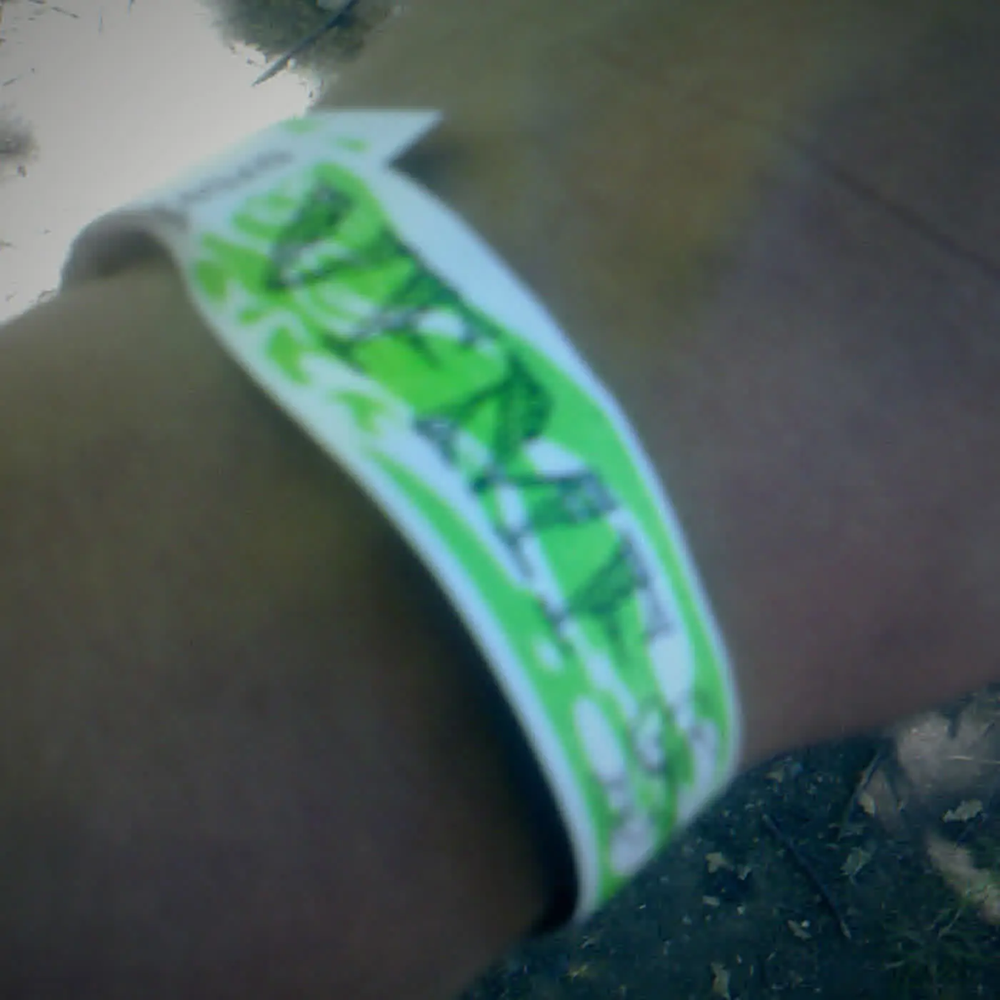

RitualJan 28, 2022
The Wristband in the Drawer
You kept the first night back in cheap plastic you don’t wear. It isn’t a shrine, just proof that a door existed again after the rooms wobbled.
- format
- Essay
- date
- Jan 28, 2022
- places
- Vancouver
- words
- 474 words · 2 min
- photo
- Photo: Richard Eriksson
You cut it in July and found it in the January drawer. You put it in a dish with the earrings you never take off, then it slid under a charger and a flyer that bled in the rain until the ink looked like it had been crying on purpose. It isn’t a shrine. It’s a refusal to throw away the proof that a door existed again, that you stood in a real line, heard a real PA, felt a night that wasn’t linoleum performing bravery for a webcam. The rooms opened. Then they wobbled. Then Omicron made promoters send the text that starts with unfortunately and ends with a refund that doesn’t cover what you were hoping for, the soft architecture of a night you had already dressed for in your head. The wristband stayed. The night stayed in it, trapped in plastic like a pressed flower that still smells faintly of sweat and smoke and the particular relief of being allowed outside after dark.
Crate culture grades vinyl and argues about pressings until friendship gets thin. You kept the cheap plastic. Same religion, smaller object: memory that doesn’t need a turntable to play, doesn’t need a caption to stay true. You don’t wear last year’s wristband to this year’s night unless you want the door to clock you as a tourist in your own memory, flashing a receipt for a feeling that already finished its sentence. You keep it where you keep the other things that are not content: the mix CD nobody asked you to digitize, the lighter that still works when the fancy ones fail, the number you never put in the phone because some nights should stay slightly hard to find, a little analog on purpose.
If you were there, you know which night, which cut, which friend who held your drink, which song that made the return feel real enough to cry about later in a bathroom that finally wasn’t your own. If you weren’t, don’t borrow someone else’s plastic and turn it into a story about endurance you didn’t earn. The afters can be a kitchen again. They probably will be, because kitchens never fully clock out and Cascadia knows how to make a kettle into a club. The wristband is how you remember they weren’t always the only option. Leave it in the drawer, light something, put the record on. That’s the whole liturgy. The door will ask for a new one when it’s time, and you’ll cut that one too, and maybe keep it, and maybe finally learn how to throw one away without feeling like you’re deleting the proof that you made it back. Until then, the drawer can keep the plastic, and the plastic can keep July, and July can keep the feeling of a door that opened when you needed it most.